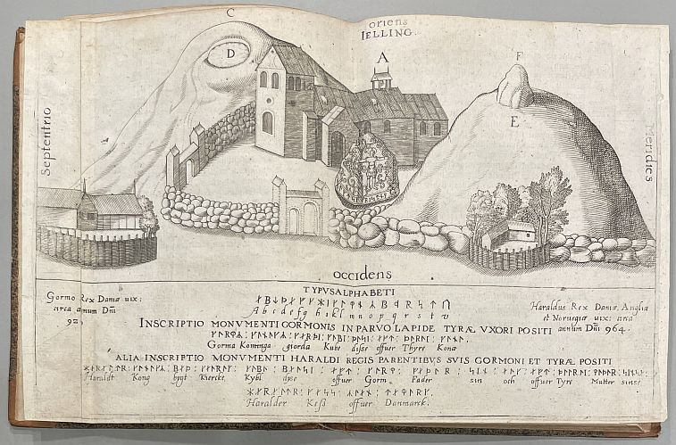

Herzlich Willkommen auf meiner Homepage!

Die älteste bekannte Darstellung des großen Runensteins von Harald Blauzahn wird Henrik Rantzau (*11.03.1526 - 31.12.1598), Statthalter der Herzogtümer Schleswig und Holstein, zugeschrieben.
Henrik Rantzaus Prospekt über die Denkmäler in Jelling erschien erstmals in Peter Lindebergs berühmtem Werk Commentarii rerum memorablium in Europa, das 1591 in Hamburg erschien.
Dieses Bild zeigt eine Fotografie eines Originals, die ich am 26.09.2022 in der Königliche Bibliothek - Den sorte Diamant - in Kopenhagen gefertigt habe.
optimiert für eine Darstellung von 1920 x 1080 Pixel
© Joachim Feik / 2000 - 2026
Grundsätzlich ist es mein Bestreben eine möglichst umfassende Online-Übersicht über die wikingerzeitlichen Relikte in Dänemark in deutscher Sprache zu erstellen. Allen voran geht es mir dabei um die (zumindest für mich) faszinierende Historie der Runensteine, zu denen ich in erster Linie die umfangreichen Quellenangaben aus dem Standardwerk "Danmarks Runeindskrifter" von Lis Jacobsen / Erik Moltke, Textband, 1942, auswerte und darüber ergänzende Recherchen - heutzutage vor allem im Internet - anstelle. Ergänzt wird dies durch meine Besuche vor Ort und meine Recherchen in den dänischen Archiven/Bibliotheken - auch vor Ort - usw. Mit den darüber erlangten Erkenntnissen ergänze/optimiere ich die einzelnen Webseiten mit Text- und Bildmaterial, mit Verlinkungen zu Schriftquellen usw. um so eine möglichst komplette Geschichte der Runensteine auszuarbeiten. Meine gesamte Arbeit ist ausschließlich nicht-kommerzieller Natur. Ich bitte bei jedweder Verwendung von Material jeglicher Art lediglich diese Lizenz CC BY-NC-SA 4.0 einzuhalten, es sei denn das Material ist bereits gemeinfrei. Grundsätzlich beantworte ich gerne Anfragen/Auskünfte - nach Möglichkeit zeitnah. Ich erfreue mich auch noch nach über 40 Jahren eigentlich täglich an diesem tollen Hobby und möchte es nicht mehr missen!
Hier geht es noch zu einem anderen Hobby von mir: